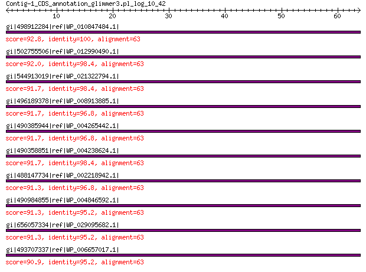

bitscore colors: <40, 40-50 , 50-80, 80-200, >200
 BLASTP 2.2.31+
Reference: Stephen F. Altschul, Thomas L. Madden, Alejandro A.
Schaffer, Jinghui Zhang, Zheng Zhang, Webb Miller, and David J.
Lipman (1997), "Gapped BLAST and PSI-BLAST: a new generation of
protein database search programs", Nucleic Acids Res. 25:3389-3402.
Reference for composition-based statistics: Alejandro A. Schaffer,
L. Aravind, Thomas L. Madden, Sergei Shavirin, John L. Spouge, Yuri
I. Wolf, Eugene V. Koonin, and Stephen F. Altschul (2001),
"Improving the accuracy of PSI-BLAST protein database searches with
composition-based statistics and other refinements", Nucleic Acids
Res. 29:2994-3005.
Database: All non-redundant GenBank CDS translations+PDB+SwissProt+PIR+PRF
excluding environmental samples from WGS projects
49,011,213 sequences; 17,563,301,199 total letters
Query= Contig-1_CDS_annotation_glimmer3.pl_log_10_42
Length=63
Score E
Sequences producing significant alignments: (Bits) Value
gi|498912284|ref|WP_010847484.1| 50S ribosomal protein L29 92.8 5e-23
gi|502755506|ref|WP_012990490.1| 50S ribosomal protein L29 92.0 1e-22
gi|544913019|ref|WP_021322794.1| 50S ribosomal protein L29 91.7 2e-22
gi|496189378|ref|WP_008913885.1| 50S ribosomal protein L29 91.7 2e-22
gi|490385944|ref|WP_004265442.1| MULTISPECIES: 50S ribosomal pro... 91.7 2e-22
gi|490358851|ref|WP_004238624.1| MULTISPECIES: 50S ribosomal pro... 91.7 2e-22
gi|488147734|ref|WP_002218942.1| MULTISPECIES: 50S ribosomal pro... 91.3 3e-22
gi|490984855|ref|WP_004846592.1| MULTISPECIES: 50S ribosomal pro... 91.3 3e-22
gi|656057334|ref|WP_029095682.1| 50S ribosomal protein L29 91.3 3e-22
gi|493707337|ref|WP_006657017.1| 50S ribosomal protein L29 90.9 3e-22
>gi|498912284|ref|WP_010847484.1| 50S ribosomal protein L29 [Xenorhabdus nematophila]
gi|300721374|ref|YP_003710645.1| 50S ribosomal protein L29 [Xenorhabdus nematophila ATCC 19061]
gi|297627862|emb|CBJ88408.1| 50S ribosomal subunit protein L29 [Xenorhabdus nematophila ATCC
19061]
gi|484362895|emb|CCW30284.1| 50S ribosomal protein L29 [Xenorhabdus nematophila F1]
gi|575846149|emb|CDL84412.1| 50S ribosomal protein L29 [Xenorhabdus szentirmaii DSM 16338]
gi|575849920|emb|CDL87615.1| 50S ribosomal protein L29 [Xenorhabdus cabanillasii JM26]
gi|604177079|gb|EYU13820.1| LSU ribosomal protein L29P [Photorhabdus luminescens BA1]
gi|661559765|emb|CDG15996.1| 50S ribosomal protein L29 [Xenorhabdus doucetiae]
gi|661566766|emb|CDG23168.1| 50S ribosomal protein L29 [Xenorhabdus poinarii G6]
Length=63
Score = 92.8 bits (229), Expect = 5e-23, Method: Compositional matrix adjust.
Identities = 63/63 (100%), Positives = 63/63 (100%), Gaps = 0/63 (0%)
Query 1 MKAQELREKSVeelntellnllreQFNLRMQAASGQLQQSHLLKQVRRNIARVKTLLTEK 60
MKAQELREKSVEELNTELLNLLREQFNLRMQAASGQLQQSHLLKQVRRNIARVKTLLTEK
Sbjct 1 MKAQELREKSVEELNTELLNLLREQFNLRMQAASGQLQQSHLLKQVRRNIARVKTLLTEK 60
Query 61 AGA 63
AGA
Sbjct 61 AGA 63
>gi|502755506|ref|WP_012990490.1| 50S ribosomal protein L29 [Xenorhabdus bovienii]
gi|290477184|ref|YP_003470099.1| 50S ribosomal subunit protein L29 [Xenorhabdus bovienii SS-2004]
gi|289176532|emb|CBJ83341.1| 50S ribosomal subunit protein L29 [Xenorhabdus bovienii SS-2004]
gi|666603409|emb|CDH29090.1| 50S ribosomal subunit protein L29 [Xenorhabdus bovienii str.
Jollieti]
gi|666608321|emb|CDH05732.1| 50S ribosomal subunit protein L29 [Xenorhabdus bovienii str.
oregonense]
gi|666612581|emb|CDH19749.1| 50S ribosomal subunit protein L29 [Xenorhabdus bovienii str.
kraussei Quebec]
gi|666617968|emb|CDG87095.1| 50S ribosomal subunit protein L29 [Xenorhabdus bovienii str.
feltiae France]
gi|666621614|emb|CDG92295.1| 50S ribosomal subunit protein L29 [Xenorhabdus bovienii str.
feltiae Florida]
gi|666628088|emb|CDG99532.1| 50S ribosomal subunit protein L29 [Xenorhabdus bovienii str.
feltiae Moldova]
gi|666631599|emb|CDH31949.1| 50S ribosomal subunit protein L29 [Xenorhabdus bovienii str.
Intermedium]
gi|666634417|emb|CDH25416.1| 50S ribosomal subunit protein L29 [Xenorhabdus bovienii str.
kraussei Becker Underwood]
gi|668988320|emb|CDG95311.1| 50S ribosomal subunit protein L29 [Xenorhabdus bovienii str.
puntauvense]
Length=63
Score = 92.0 bits (227), Expect = 1e-22, Method: Compositional matrix adjust.
Identities = 62/63 (98%), Positives = 63/63 (100%), Gaps = 0/63 (0%)
Query 1 MKAQELREKSVeelntellnllreQFNLRMQAASGQLQQSHLLKQVRRNIARVKTLLTEK 60
MKAQELR+KSVEELNTELLNLLREQFNLRMQAASGQLQQSHLLKQVRRNIARVKTLLTEK
Sbjct 1 MKAQELRDKSVEELNTELLNLLREQFNLRMQAASGQLQQSHLLKQVRRNIARVKTLLTEK 60
Query 61 AGA 63
AGA
Sbjct 61 AGA 63
>gi|544913019|ref|WP_021322794.1| 50S ribosomal protein L29 [Photorhabdus temperata]
gi|530711213|gb|EQC02074.1| 50S ribosomal protein L29 [Photorhabdus temperata subsp. temperata
M1021]
gi|550875212|gb|ERT14245.1| 50S ribosomal protein L29 [Photorhabdus temperata J3]
gi|572731299|gb|ETS29488.1| LSU ribosomal protein L29P [Photorhabdus temperata subsp. khanii
NC19]
gi|662546830|gb|KER01468.1| LSU ribosomal protein L29P [Photorhabdus temperata subsp. temperata
Meg1]
Length=63
Score = 91.7 bits (226), Expect = 2e-22, Method: Compositional matrix adjust.
Identities = 62/63 (98%), Positives = 63/63 (100%), Gaps = 0/63 (0%)
Query 1 MKAQELREKSVeelntellnllreQFNLRMQAASGQLQQSHLLKQVRRNIARVKTLLTEK 60
MKAQELREKSVEELNTELLNLLREQFNLRMQAASGQLQQSHLLKQVRR+IARVKTLLTEK
Sbjct 1 MKAQELREKSVEELNTELLNLLREQFNLRMQAASGQLQQSHLLKQVRRDIARVKTLLTEK 60
Query 61 AGA 63
AGA
Sbjct 61 AGA 63
>gi|496189378|ref|WP_008913885.1| 50S ribosomal protein L29 [Providencia burhodogranariea]
gi|414091171|gb|EKT52862.1| 50S ribosomal protein L29 [Providencia burhodogranariea DSM 19968]
Length=63
Score = 91.7 bits (226), Expect = 2e-22, Method: Compositional matrix adjust.
Identities = 61/63 (97%), Positives = 63/63 (100%), Gaps = 0/63 (0%)
Query 1 MKAQELREKSVeelntellnllreQFNLRMQAASGQLQQSHLLKQVRRNIARVKTLLTEK 60
MKAQELREKSVEELN+ELLNLLREQFNLRMQAASGQLQQSHLLKQVRR+IARVKTLLTEK
Sbjct 1 MKAQELREKSVEELNSELLNLLREQFNLRMQAASGQLQQSHLLKQVRRDIARVKTLLTEK 60
Query 61 AGA 63
AGA
Sbjct 61 AGA 63
>gi|490385944|ref|WP_004265442.1| MULTISPECIES: 50S ribosomal protein L29 [Providencia]
gi|386743640|ref|YP_006216819.1| 50S ribosomal protein L29 [Providencia stuartii MRSN 2154]
gi|188019723|gb|EDU57763.1| ribosomal protein L29 [Providencia stuartii ATCC 25827]
gi|291310827|gb|EFE51280.1| ribosomal protein L29 [Providencia rettgeri DSM 1131]
gi|384480333|gb|AFH94128.1| 50S ribosomal protein L29 [Providencia stuartii MRSN 2154]
gi|414097887|gb|EKT59539.1| 50S ribosomal protein L29 [Providencia rettgeri Dmel1]
Length=63
Score = 91.7 bits (226), Expect = 2e-22, Method: Compositional matrix adjust.
Identities = 61/63 (97%), Positives = 62/63 (98%), Gaps = 0/63 (0%)
Query 1 MKAQELREKSVeelntellnllreQFNLRMQAASGQLQQSHLLKQVRRNIARVKTLLTEK 60
MKAQELREKSVEELN ELLNLLREQFNLRMQAASGQLQQSHLLKQVRR+IARVKTLLTEK
Sbjct 1 MKAQELREKSVEELNAELLNLLREQFNLRMQAASGQLQQSHLLKQVRRDIARVKTLLTEK 60
Query 61 AGA 63
AGA
Sbjct 61 AGA 63
>gi|490358851|ref|WP_004238624.1| MULTISPECIES: 50S ribosomal protein L29 [Enterobacteriaceae]
gi|197287076|ref|YP_002152948.1| 50S ribosomal protein L29 [Proteus mirabilis HI4320]
gi|455737455|ref|YP_007503721.1| 50S ribosomal protein L29 [Morganella morganii subsp. morganii
KT]
gi|529238925|ref|YP_008399784.1| 50S ribosomal protein L29 [Proteus mirabilis BB2000]
gi|226699274|sp|B4F1J2.1|RL29_PROMH RecName: Full=50S ribosomal protein L29
gi|194684563|emb|CAR46393.1| 50S ribosomal protein L29 [Proteus mirabilis HI4320]
gi|225202675|gb|EEG85029.1| ribosomal protein L29 [Proteus penneri ATCC 35198]
gi|227165008|gb|EEI49847.1| ribosomal protein L29 [Proteus mirabilis ATCC 29906]
gi|404595468|gb|EKA96012.1| 50S ribosomal protein L29 [Proteus mirabilis WGLW6]
gi|404600170|gb|EKB00618.1| 50S ribosomal protein L29 [Proteus mirabilis WGLW4]
gi|455419018|gb|AGG29348.1| 50S ribosomal protein L29 [Morganella morganii subsp. morganii
KT]
gi|468907497|gb|EMP49946.1| LSU ribosomal protein L29p (L35e) [Morganella morganii SC01]
gi|529189963|gb|AGS61723.1| 50S ribosomal protein L29 [Proteus mirabilis BB2000]
gi|558646608|gb|EST57100.1| 50S ribosomal protein L29 [Proteus hauseri ZMd44]
gi|570277869|gb|ETO41518.1| 50S ribosomal protein L29 [Morganella sp. EGD-HP17]
gi|571172251|emb|CDK65668.1| LSU ribosomal protein L29p (L35e) [Morganella morganii IS15]
Length=63
Score = 91.7 bits (226), Expect = 2e-22, Method: Compositional matrix adjust.
Identities = 62/63 (98%), Positives = 63/63 (100%), Gaps = 0/63 (0%)
Query 1 MKAQELREKSVeelntellnllreQFNLRMQAASGQLQQSHLLKQVRRNIARVKTLLTEK 60
MKA+ELREKSVEELNTELLNLLREQFNLRMQAASGQLQQSHLLKQVRRNIARVKTLLTEK
Sbjct 1 MKAKELREKSVEELNTELLNLLREQFNLRMQAASGQLQQSHLLKQVRRNIARVKTLLTEK 60
Query 61 AGA 63
AGA
Sbjct 61 AGA 63
>gi|488147734|ref|WP_002218942.1| MULTISPECIES: 50S ribosomal protein L29 [Enterobacteriaceae]
gi|22127868|ref|NP_671291.1| 50S ribosomal protein L29 [Yersinia pestis KIM10+]
gi|45440075|ref|NP_991614.1| 50S ribosomal protein L29 [Yersinia pestis biovar Microtus str.
91001]
gi|51597980|ref|YP_072171.1| 50S ribosomal protein L29 [Yersinia pseudotuberculosis IP 32953]
gi|108809246|ref|YP_653162.1| 50S ribosomal protein L29 [Yersinia pestis Antiqua]
gi|108814011|ref|YP_649778.1| 50S ribosomal protein L29 [Yersinia pestis Nepal516]
gi|145597460|ref|YP_001161535.1| 50S ribosomal protein L29 [Yersinia pestis Pestoides F]
gi|153948458|ref|YP_001402855.1| 50S ribosomal protein L29 [Yersinia pseudotuberculosis IP 31758]
gi|162418523|ref|YP_001605183.1| 50S ribosomal protein L29 [Yersinia pestis Angola]
gi|170022552|ref|YP_001719057.1| 50S ribosomal protein L29 [Yersinia pseudotuberculosis YPIII]
gi|186897176|ref|YP_001874288.1| 50S ribosomal protein L29 [Yersinia pseudotuberculosis PB1/+]
gi|218927423|ref|YP_002345298.1| 50S ribosomal protein L29 [Yersinia pestis CO92]
gi|304653862|ref|YP_003864086.1| 50S ribosomal protein L29 [Yersinia pestis Z176003]
gi|384137806|ref|YP_005520508.1| 50S ribosomal protein L29 [Yersinia pestis A1122]
gi|384412846|ref|YP_005622208.1| 50S ribosomal protein L29 [Yersinia pestis biovar Medievalis
str. Harbin 35]
gi|20139508|sp|Q8ZJA4.1|RL29_YERPE RecName: Full=50S ribosomal protein L29 [Yersinia pestis]
gi|73917146|sp|Q664S9.1|RL29_YERPS RecName: Full=50S ribosomal protein L29 [Yersinia pseudotuberculosis
IP 32953]
gi|123072594|sp|Q1C2V5.1|RL29_YERPA RecName: Full=50S ribosomal protein L29 [Yersinia pestis Antiqua]
gi|123246104|sp|Q1CCV2.1|RL29_YERPN RecName: Full=50S ribosomal protein L29 [Yersinia pestis Nepal516]
gi|166229147|sp|A4TH00.1|RL29_YERPP RecName: Full=50S ribosomal protein L29 [Yersinia pestis Pestoides
F]
gi|166987931|sp|A7FNM7.1|RL29_YERP3 RecName: Full=50S ribosomal protein L29 [Yersinia pseudotuberculosis
IP 31758]
gi|226699316|sp|B2K5M2.1|RL29_YERPB RecName: Full=50S ribosomal protein L29 [Yersinia pseudotuberculosis
PB1/+]
gi|226699317|sp|A9R904.1|RL29_YERPG RecName: Full=50S ribosomal protein L29 [Yersinia pestis Angola]
gi|226699318|sp|B1JIW9.1|RL29_YERPY RecName: Full=50S ribosomal protein L29 [Yersinia pseudotuberculosis
YPIII]
gi|21961003|gb|AAM87542.1|AE014002_15 50S ribosomal subunit protein L29 [Yersinia pestis KIM10+]
gi|45434930|gb|AAS60491.1| 50S ribosomal protein L29 [Yersinia pestis biovar Microtus str.
91001]
gi|51591262|emb|CAH22928.1| 50S ribosomal protein L29 [Yersinia pseudotuberculosis IP 32953]
gi|108777659|gb|ABG20178.1| LSU ribosomal protein L29P [Yersinia pestis Nepal516]
gi|108781159|gb|ABG15217.1| LSU ribosomal protein L29P [Yersinia pestis Antiqua]
gi|115346034|emb|CAL18900.1| 50S ribosomal protein L29 [Yersinia pestis CO92]
gi|145209156|gb|ABP38563.1| LSU ribosomal protein L29P [Yersinia pestis Pestoides F]
gi|149290143|gb|EDM40220.1| 50S ribosomal protein L29 [Yersinia pestis CA88-4125]
gi|152959953|gb|ABS47414.1| ribosomal protein L29 [Yersinia pseudotuberculosis IP 31758]
gi|162351338|gb|ABX85286.1| ribosomal protein L29 [Yersinia pestis Angola]
gi|165920147|gb|EDR37448.1| ribosomal protein L29 [Yersinia pestis biovar Orientalis str.
F1991016]
gi|165990520|gb|EDR42821.1| ribosomal protein L29 [Yersinia pestis biovar Antiqua str. E1979001]
gi|166205574|gb|EDR50054.1| ribosomal protein L29 [Yersinia pestis biovar Antiqua str. B42003004]
gi|166962860|gb|EDR58881.1| ribosomal protein L29 [Yersinia pestis biovar Orientalis str.
MG05-1020]
gi|167051597|gb|EDR63005.1| ribosomal protein L29 [Yersinia pestis biovar Antiqua str. UG05-0454]
gi|167055332|gb|EDR65126.1| ribosomal protein L29 [Yersinia pestis biovar Mediaevalis str.
K1973002]
gi|169749086|gb|ACA66604.1| ribosomal protein L29 [Yersinia pseudotuberculosis YPIII]
gi|186700202|gb|ACC90831.1| ribosomal protein L29 [Yersinia pseudotuberculosis PB1/+]
gi|229678661|gb|EEO74766.1| 50S ribosomal subunit protein L29 [Yersinia pestis Nepal516]
gi|229690467|gb|EEO82521.1| 50S ribosomal subunit protein L29 [Yersinia pestis biovar Orientalis
str. India 195]
gi|229696441|gb|EEO86488.1| 50S ribosomal subunit protein L29 [Yersinia pestis biovar Orientalis
str. PEXU2]
gi|229706369|gb|EEO92376.1| 50S ribosomal subunit protein L29 [Yersinia pestis Pestoides
A]
gi|270336744|gb|EFA47521.1| ribosomal protein L29 [Yersinia pestis KIM D27]
gi|320013350|gb|ADV96921.1| 50S ribosomal subunit protein L29 [Yersinia pestis biovar Medievalis
str. Harbin 35]
gi|342852935|gb|AEL71488.1| 50S ribosomal protein L29 [Yersinia pestis A1122]
gi|391433225|gb|EIQ94582.1| ribosomal protein L29 [Yersinia pestis PY-01]
gi|391434034|gb|EIQ95278.1| ribosomal protein L29 [Yersinia pestis PY-02]
gi|391436831|gb|EIQ97751.1| ribosomal protein L29 [Yersinia pestis PY-03]
gi|391449102|gb|EIR08851.1| ribosomal protein L29 [Yersinia pestis PY-04]
gi|391449682|gb|EIR09380.1| ribosomal protein L29 [Yersinia pestis PY-05]
gi|391451924|gb|EIR11380.1| ribosomal protein L29 [Yersinia pestis PY-06]
gi|391465103|gb|EIR23326.1| ribosomal protein L29 [Yersinia pestis PY-07]
gi|391466619|gb|EIR24675.1| ribosomal protein L29 [Yersinia pestis PY-08]
gi|391468766|gb|EIR26608.1| ribosomal protein L29 [Yersinia pestis PY-09]
gi|391482519|gb|EIR38961.1| ribosomal protein L29 [Yersinia pestis PY-10]
gi|391483063|gb|EIR39458.1| ribosomal protein L29 [Yersinia pestis PY-12]
gi|391483409|gb|EIR39768.1| ribosomal protein L29 [Yersinia pestis PY-11]
gi|391497344|gb|EIR52211.1| ribosomal protein L29 [Yersinia pestis PY-13]
gi|391498338|gb|EIR53119.1| ribosomal protein L29 [Yersinia pestis PY-15]
gi|391501850|gb|EIR56210.1| ribosomal protein L29 [Yersinia pestis PY-14]
gi|391512946|gb|EIR66218.1| ribosomal protein L29 [Yersinia pestis PY-16]
gi|391514573|gb|EIR67665.1| ribosomal protein L29 [Yersinia pestis PY-19]
gi|391516210|gb|EIR69126.1| ribosomal protein L29 [Yersinia pestis PY-25]
gi|391528618|gb|EIR80419.1| ribosomal protein L29 [Yersinia pestis PY-29]
gi|391531475|gb|EIR82967.1| ribosomal protein L29 [Yersinia pestis PY-34]
gi|391532686|gb|EIR84043.1| ribosomal protein L29 [Yersinia pestis PY-32]
gi|391545626|gb|EIR95692.1| ribosomal protein L29 [Yersinia pestis PY-36]
gi|391547325|gb|EIR97229.1| ribosomal protein L29 [Yersinia pestis PY-42]
gi|391548065|gb|EIR97901.1| ribosomal protein L29 [Yersinia pestis PY-45]
gi|391561682|gb|EIS10188.1| ribosomal protein L29 [Yersinia pestis PY-46]
gi|391562803|gb|EIS11181.1| ribosomal protein L29 [Yersinia pestis PY-47]
gi|391564949|gb|EIS13106.1| ribosomal protein L29 [Yersinia pestis PY-48]
gi|391577092|gb|EIS23561.1| ribosomal protein L29 [Yersinia pestis PY-52]
gi|391577938|gb|EIS24279.1| ribosomal protein L29 [Yersinia pestis PY-53]
gi|391589078|gb|EIS34019.1| ribosomal protein L29 [Yersinia pestis PY-55]
gi|391592674|gb|EIS37063.1| ribosomal protein L29 [Yersinia pestis PY-54]
gi|391593212|gb|EIS37541.1| ribosomal protein L29 [Yersinia pestis PY-56]
gi|391606008|gb|EIS48790.1| ribosomal protein L29 [Yersinia pestis PY-60]
gi|391607984|gb|EIS50522.1| ribosomal protein L29 [Yersinia pestis PY-58]
gi|391608678|gb|EIS51143.1| ribosomal protein L29 [Yersinia pestis PY-59]
gi|391620636|gb|EIS61769.1| ribosomal protein L29 [Yersinia pestis PY-61]
gi|391621547|gb|EIS62575.1| ribosomal protein L29 [Yersinia pestis PY-63]
gi|391629979|gb|EIS69816.1| ribosomal protein L29 [Yersinia pestis PY-64]
gi|391632083|gb|EIS71648.1| ribosomal protein L29 [Yersinia pestis PY-65]
gi|391643378|gb|EIS81555.1| ribosomal protein L29 [Yersinia pestis PY-71]
gi|391646121|gb|EIS83912.1| ribosomal protein L29 [Yersinia pestis PY-72]
gi|391649581|gb|EIS86953.1| ribosomal protein L29 [Yersinia pestis PY-66]
gi|391655918|gb|EIS92601.1| ribosomal protein L29 [Yersinia pestis PY-76]
gi|391662888|gb|EIS98783.1| ribosomal protein L29 [Yersinia pestis PY-88]
gi|391667978|gb|EIT03254.1| ribosomal protein L29 [Yersinia pestis PY-89]
gi|391669434|gb|EIT04564.1| ribosomal protein L29 [Yersinia pestis PY-90]
gi|391673063|gb|EIT07818.1| ribosomal protein L29 [Yersinia pestis PY-91]
gi|391687099|gb|EIT20445.1| ribosomal protein L29 [Yersinia pestis PY-93]
gi|391688687|gb|EIT21882.1| ribosomal protein L29 [Yersinia pestis PY-92]
gi|391689991|gb|EIT23067.1| ribosomal protein L29 [Yersinia pestis PY-94]
gi|391701226|gb|EIT33250.1| ribosomal protein L29 [Yersinia pestis PY-95]
gi|391704420|gb|EIT36079.1| ribosomal protein L29 [Yersinia pestis PY-96]
gi|391705023|gb|EIT36623.1| ribosomal protein L29 [Yersinia pestis PY-98]
gi|391715925|gb|EIT46424.1| ribosomal protein L29 [Yersinia pestis PY-99]
gi|391720674|gb|EIT50674.1| ribosomal protein L29 [Yersinia pestis PY-100]
gi|391721232|gb|EIT51186.1| ribosomal protein L29 [Yersinia pestis PY-101]
gi|391731680|gb|EIT60349.1| ribosomal protein L29 [Yersinia pestis PY-102]
gi|391734412|gb|EIT62673.1| ribosomal protein L29 [Yersinia pestis PY-103]
gi|391737511|gb|EIT65388.1| ribosomal protein L29 [Yersinia pestis PY-113]
gi|411177963|gb|EKS47975.1| 50S ribosomal protein L29 [Yersinia pestis INS]
gi|544006452|gb|ERK05305.1| LSU ribosomal protein L29p (L35e) [Serratia fonticola AU-AP2C]
gi|544006546|gb|ERK05393.1| LSU ribosomal protein L29p (L35e) [Serratia fonticola AU-P3(3)]
gi|550619963|gb|ERP71234.1| 50S ribosomal protein L29 [Yersinia pestis S3]
gi|550620584|gb|ERP71822.1| 50S ribosomal protein L29 [Yersinia pestis 24H]
gi|550621146|gb|ERP72359.1| 50S ribosomal protein L29 [Yersinia pestis 113]
gi|550631515|gb|ERP82052.1| 50S ribosomal protein L29 [Yersinia pestis 9]
gi|566684795|dbj|GAE12489.1| 50S ribosomal protein L29 [Yersinia pseudotuberculosis NBRC 105692]
gi|588286220|gb|AHK18956.1| 50S ribosomal protein L29 [Yersinia similis]
gi|594136734|gb|EXU71590.1| 50S ribosomal protein L29 [Yersinia pestis EV NIIEG]
gi|666391550|gb|KEY58711.1| 50S ribosomal protein L29 [Serratia sp. DD3]
gi|668663801|gb|KFB60094.1| 50S ribosomal protein L29 [Yersinia pestis subsp. pestis]
Length=63
Score = 91.3 bits (225), Expect = 3e-22, Method: Compositional matrix adjust.
Identities = 61/63 (97%), Positives = 63/63 (100%), Gaps = 0/63 (0%)
Query 1 MKAQELREKSVeelntellnllreQFNLRMQAASGQLQQSHLLKQVRRNIARVKTLLTEK 60
MKAQELREKSVEELNTELLNLLREQFNLRMQAASGQLQQ+HLLKQVRRN+ARVKTLLTEK
Sbjct 1 MKAQELREKSVEELNTELLNLLREQFNLRMQAASGQLQQTHLLKQVRRNVARVKTLLTEK 60
Query 61 AGA 63
AGA
Sbjct 61 AGA 63
>gi|490984855|ref|WP_004846592.1| MULTISPECIES: 50S ribosomal protein L29 [Enterobacteriaceae]
gi|316917584|gb|EFV38929.1| 50S ribosomal protein L29 [Enterobacteriaceae bacterium 9_2_54FAA]
gi|364568809|gb|EHM46447.1| ribosomal protein L29 [Hafnia alvei ATCC 51873]
gi|668975150|gb|KFC90034.1| LSU ribosomal protein L29p (L35e) [Hafnia alvei ATCC 13337]
Length=63
Score = 91.3 bits (225), Expect = 3e-22, Method: Compositional matrix adjust.
Identities = 60/63 (95%), Positives = 63/63 (100%), Gaps = 0/63 (0%)
Query 1 MKAQELREKSVeelntellnllreQFNLRMQAASGQLQQSHLLKQVRRNIARVKTLLTEK 60
MKAQELREKSVEELNTELL+LLREQFNLRMQAASGQLQQSHLLKQVRR++ARVKTLLTEK
Sbjct 1 MKAQELREKSVEELNTELLSLLREQFNLRMQAASGQLQQSHLLKQVRRDVARVKTLLTEK 60
Query 61 AGA 63
AGA
Sbjct 61 AGA 63
>gi|656057334|ref|WP_029095682.1| 50S ribosomal protein L29 [Budvicia aquatica]
Length=63
Score = 91.3 bits (225), Expect = 3e-22, Method: Compositional matrix adjust.
Identities = 60/63 (95%), Positives = 63/63 (100%), Gaps = 0/63 (0%)
Query 1 MKAQELREKSVeelntellnllreQFNLRMQAASGQLQQSHLLKQVRRNIARVKTLLTEK 60
MKA+ELREKSVEELNTELL+LLREQFNLRMQAASGQLQQSHLLKQVRRN+ARVKTLLTEK
Sbjct 1 MKAKELREKSVEELNTELLSLLREQFNLRMQAASGQLQQSHLLKQVRRNVARVKTLLTEK 60
Query 61 AGA 63
AGA
Sbjct 61 AGA 63
>gi|493707337|ref|WP_006657017.1| 50S ribosomal protein L29 [Providencia alcalifaciens]
gi|212688355|gb|EEB47883.1| ribosomal protein L29 [Providencia alcalifaciens DSM 30120]
gi|414100334|gb|EKT61953.1| 50S ribosomal protein L29 [Providencia alcalifaciens Dmel2]
gi|573498030|gb|ETS98572.1| ribosomal protein L29 [Providencia alcalifaciens PAL-3]
gi|573506377|gb|ETT06564.1| ribosomal protein L29 [Providencia alcalifaciens F90-2004]
gi|577056708|gb|EUC94183.1| ribosomal protein L29 [Providencia alcalifaciens PAL-2]
gi|577064533|gb|EUD01449.1| ribosomal protein L29 [Providencia alcalifaciens PAL-1]
gi|577067735|gb|EUD04474.1| ribosomal protein L29 [Providencia alcalifaciens RIMD 1656011]
gi|577069182|gb|EUD05763.1| ribosomal protein L29 [Providencia alcalifaciens R90-1475]
gi|577073816|gb|EUD10064.1| ribosomal protein L29 [Providencia alcalifaciens 205/92]
Length=63
Score = 90.9 bits (224), Expect = 3e-22, Method: Compositional matrix adjust.
Identities = 60/63 (95%), Positives = 62/63 (98%), Gaps = 0/63 (0%)
Query 1 MKAQELREKSVeelntellnllreQFNLRMQAASGQLQQSHLLKQVRRNIARVKTLLTEK 60
MKAQELREKSVEELN ELLNLLREQFNLRMQAASGQLQQSHL+KQVRR+IARVKTLLTEK
Sbjct 1 MKAQELREKSVEELNAELLNLLREQFNLRMQAASGQLQQSHLMKQVRRDIARVKTLLTEK 60
Query 61 AGA 63
AGA
Sbjct 61 AGA 63
Lambda K H a alpha
0.317 0.124 0.309 0.792 4.96
Gapped
Lambda K H a alpha sigma
0.267 0.0410 0.140 1.90 42.6 43.6
Effective search space used: 443741444832